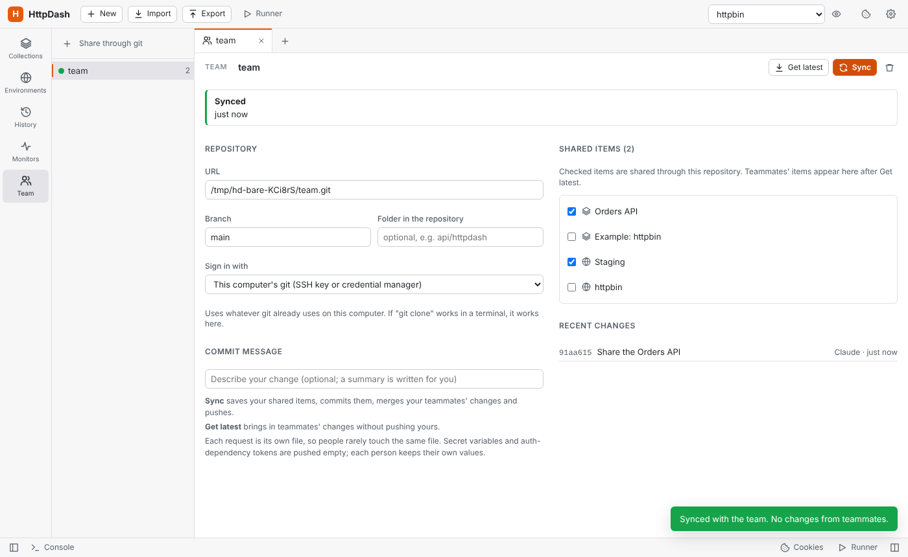
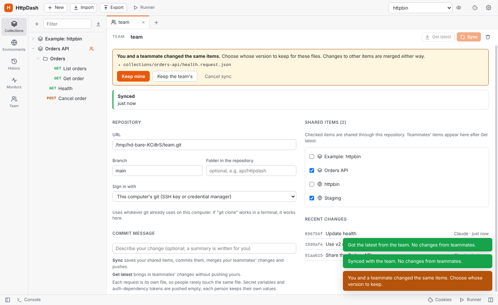

Team sharing through git
Share collections and environments with your team through any git repository: GitHub, GitLab, Bitbucket, Azure DevOps, Gitea or your own server. Open Team in the sidebar and connect a repository:
- Repository: enter its URL (HTTPS or SSH), the branch, and optionally a folder, so the workspace can live inside an existing project repository.
- Sign-in: either use this computer's git (SSH keys, Git Credential Manager, stored credentials), or save an access token. Tokens are encrypted with the system keychain (where there is none, as on Linux without a keyring, they are only encoded) and kept out of the workspace, exports and the repository.
- Shared items: tick the collections and environments to share, then click Sync.
Teammates connect the same repository and click Get latest; the shared items appear in their sidebar with a team badge.
- Sync saves your shared items, commits them (with your message, or a summary of what changed), merges teammates' changes and pushes.
- Get latest brings in teammates' changes without pushing yours (they are committed locally, so it can still ask about conflicts).
- Conflicts: each request is its own file, so two people rarely edit the same file. When they do, HttpDash lists the files and you choose Keep mine, Keep the team's or Cancel sync. Changes to other items merge either way.
- Secrets stay local:
- Secret variables, auth-dependency tokens and OAuth 2.0 access and refresh tokens are written with empty values; everyone keeps their own.
- Before pushing, the secret scan checks what is about to be shared and warns about plain-text credentials.
- Open tabs: tabs follow the team's version unless they have unsaved edits.
- History: the last 30 commits are shown, and every sync is recorded in the audit log.
Git must be installed (it usually is on macOS; on Windows, install it from git-scm.com). The repository holds readable JSON, so changes can also be reviewed in pull requests:
httpdash.json
collections/orders-api/_collection.json collection settings and variables
collections/orders-api/orders/_folder.json
collections/orders-api/orders/list-orders.request.json
environments/staging.json
 Connecting a repository |
 Choosing whose version to keep |